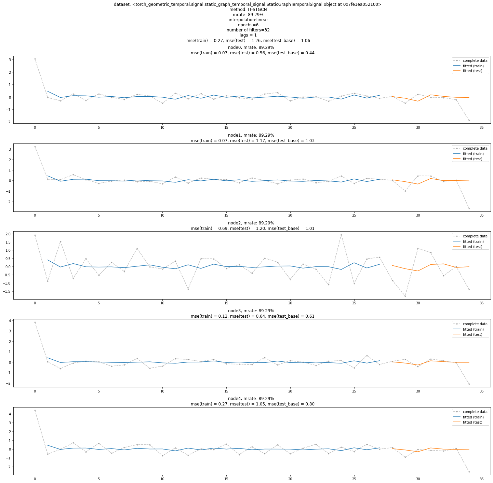

import itstgcnsnd
import torch
import itstgcnsnd.planner Padalme GSO_st
ITSTGCN
edit
from torch_geometric_temporal.dataset import PedalMeDatasetLoader
loader2 = PedalMeDatasetLoader()import numpy as npfrom torch_geometric_temporal.nn.recurrent import GConvGRU
import copy
import torch_geometric_temporal
import torch.nn.functional as Ffrom rpy2.robjects.vectors import FloatVector
import rpy2.robjects as robjects
from rpy2.robjects.packages import importr
import rpy2.robjects.numpy2ri as rpyn
GNAR = importr('GNAR') # import GNAR
#igraph = importr('igraph') # import igraph
ebayesthresh = importr('EbayesThresh').ebayesthreshdef flatten_weight(T,N,ws,wt):
Is = np.eye(N,N)
lst = [[0]*T for t in range(T)]
for i in range(T):
for j in range(T):
if i==j:
lst[i][j] = ws
elif abs(i-j)==1:
lst[i][j] = Is
else:
lst[i][j] = Is*0
return np.concatenate([np.concatenate(l,axis=1) for l in lst],axis=0) # TN*TN matrix
def make_Psi(T,N,edge_index,edge_weight):
wt = np.zeros((T,T))
for i in range(T):
for j in range(T):
if i==j :
wt[i,j] = 0
elif np.abs(i-j) <= 1 :
wt[i,j] = 1
ws = np.zeros((N,N))
for i in range(N):
for j in range(edge_weight.shape[0]):
if edge_index[0][j] == i :
ws[i,edge_index[1][j]] = edge_weight[j]
W = flatten_weight(T,N,ws,wt) # TN*TN matrix
d = np.array(W.sum(axis=1))
D = np.diag(d)
L = np.array(np.diag(1/np.sqrt(d)) @ (D-W) @ np.diag(1/np.sqrt(d)))
lamb, Psi = np.linalg.eigh(L)
return Psi # TN*TN matrix
def trim(f,edge_index,edge_weight):
f = np.array(f)
if len(f.shape)==1: f = f.reshape(-1,1)
T,N = f.shape # f = T*N matrix
Psi = make_Psi(T,N,edge_index,edge_weight) # TN*TN matrix
fbar = Psi.T @ f.reshape(-1,1) # TN*TN X TN*1 matrix = TN*1 matrix
fbar_threshed = np.stack([ebayesthresh(FloatVector(fbar.reshape(-1,N)[:,i])) for i in range(N)],axis=1)
fhat_flatten = Psi @ fbar_threshed.reshape(-1,1) # inverse dft
fhat = fhat_flatten.reshape(-1,N)
return fhat
def update_from_freq_domain(signal, missing_index,edge_index,edge_weight):
signal = np.array(signal)
T,N = signal.shape
signal_trimed = trim(signal,edge_index,edge_weight)
for i in range(N):
try:
signal[missing_index[i],i] = signal_trimed[missing_index[i],i]
except:
pass
return signal
class StgcnLearner:
def __init__(self,train_dataset,dataset_name = None):
self.train_dataset = train_dataset
self.lags = torch.tensor(train_dataset.features).shape[-1]
self.dataset_name = str(train_dataset) if dataset_name is None else dataset_name
self.mindex= getattr(self.train_dataset,'mindex',None)
self.mrate_eachnode = getattr(self.train_dataset,'mrate_eachnode',0)
self.mrate_total = getattr(self.train_dataset,'mrate_total',0)
self.mtype = getattr(self.train_dataset,'mtype',None)
self.interpolation_method = getattr(self.train_dataset,'interpolation_method',None)
self.method = 'STGCN'
def learn(self,filters=32,epoch=50):
self.model = RecurrentGCN(node_features=self.lags, filters=filters)
self.optimizer = torch.optim.Adam(self.model.parameters(), lr=0.01)
self.model.train()
for e in range(epoch):
for t, snapshot in enumerate(self.train_dataset):
yt_hat = self.model(snapshot.x, snapshot.edge_index, snapshot.edge_attr)
cost = torch.mean((yt_hat-snapshot.y)**2)
cost.backward()
self.optimizer.step()
self.optimizer.zero_grad()
print('{}/{}'.format(e+1,epoch),end='\r')
# recording HP
self.nof_filters = filters
self.epochs = epoch+1
def __call__(self,dataset):
X = torch.tensor(dataset.features).float()
y = torch.tensor(dataset.targets).float()
yhat = torch.stack([self.model(snapshot.x, snapshot.edge_index, snapshot.edge_attr) for snapshot in dataset]).detach().squeeze().float()
return {'X':X, 'y':y, 'yhat':yhat}
class ITStgcnLearner(StgcnLearner):
def __init__(self,train_dataset,dataset_name = None):
super().__init__(train_dataset)
self.method = 'IT-STGCN'
def learn(self,filters=32,epoch=50):
self.model = RecurrentGCN(node_features=self.lags, filters=filters)
self.optimizer = torch.optim.Adam(self.model.parameters(), lr=0.01)
self.model.train()
train_dataset_temp = copy.copy(self.train_dataset)
for e in range(epoch):
f,lags = convert_train_dataset(train_dataset_temp)
f = update_from_freq_domain(f,self.mindex,self.train_dataset.edge_index,self.train_dataset.edge_weight)
T,N = f.shape
data_dict_temp = {
'edges':self.train_dataset.edge_index.T.tolist(),
'node_ids':{'node'+str(i):i for i in range(N)},
'FX':f
}
train_dataset_temp = DatasetLoader(data_dict_temp).get_dataset(lags=self.lags)
for t, snapshot in enumerate(train_dataset_temp):
yt_hat = self.model(snapshot.x, snapshot.edge_index, snapshot.edge_attr)
cost = torch.mean((yt_hat-snapshot.y)**2)
cost.backward()
self.optimizer.step()
self.optimizer.zero_grad()
print('{}/{}'.format(e+1,epoch),end='\r')
# record
self.nof_filters = filters
self.epochs = epoch+1
def convert_train_dataset(train_dataset):
lags = torch.tensor(train_dataset.features).shape[-1]
f = torch.concat([train_dataset[0].x.T,torch.tensor(train_dataset.targets)],axis=0).numpy()
return f,lags
class RecurrentGCN(torch.nn.Module):
def __init__(self, node_features, filters):
super(RecurrentGCN, self).__init__()
self.recurrent = GConvGRU(node_features, filters, 2)
self.linear = torch.nn.Linear(filters, 1)
def forward(self, x, edge_index, edge_weight):
h = self.recurrent(x, edge_index, edge_weight)
h = F.relu(h)
h = self.linear(h)
return h
class DatasetLoader(object):
def __init__(self,data_dict):
self._dataset = data_dict
def _get_edges(self):
self._edges = np.array(self._dataset["edges"]).T
def _get_edge_weights(self):
self._edge_weights = np.ones(self._edges.shape[1])
def _get_targets_and_features(self):
stacked_target = np.array(self._dataset["FX"])
self.features = [
stacked_target[i : i + self.lags, :].T
for i in range(stacked_target.shape[0] - self.lags)
]
self.targets = [
stacked_target[i + self.lags, :].T
for i in range(stacked_target.shape[0] - self.lags)
]
def get_dataset(self, lags: int = 4) -> torch_geometric_temporal.signal.StaticGraphTemporalSignal:
"""Returning the Chickenpox Hungary data iterator.
Args types:
* **lags** *(int)* - The number of time lags.
Return types:
* **dataset** *(torch_geometric_temporal.signal.StaticGraphTemporalSignal)* - The Chickenpox Hungary dataset.
"""
self.lags = lags
self._get_edges()
self._get_edge_weights()
self._get_targets_and_features()
dataset = torch_geometric_temporal.signal.StaticGraphTemporalSignal(
self._edges, self._edge_weights, self.features, self.targets
)
return dataset
class Evaluator:
def __init__(self,learner,train_dataset,test_dataset):
self.learner = learner
# self.learner.model.eval()
try:self.learner.model.eval()
except:pass
self.train_dataset = train_dataset
self.test_dataset = test_dataset
self.lags = self.learner.lags
rslt_tr = self.learner(self.train_dataset)
rslt_test = self.learner(self.test_dataset)
self.X_tr = rslt_tr['X']
self.y_tr = rslt_tr['y']
self.f_tr = torch.concat([self.train_dataset[0].x.T,self.y_tr],axis=0).float()
self.yhat_tr = rslt_tr['yhat']
self.fhat_tr = torch.concat([self.train_dataset[0].x.T,self.yhat_tr],axis=0).float()
self.X_test = rslt_test['X']
self.y_test = rslt_test['y']
self.f_test = self.y_test
self.yhat_test = rslt_test['yhat']
self.fhat_test = self.yhat_test
self.f = torch.concat([self.f_tr,self.f_test],axis=0)
self.fhat = torch.concat([self.fhat_tr,self.fhat_test],axis=0)
def calculate_mse(self):
test_base_mse_eachnode = ((self.y_test - self.y_test.mean(axis=0).reshape(-1,self.y_test.shape[-1]))**2).mean(axis=0).tolist()
test_base_mse_total = ((self.y_test - self.y_test.mean(axis=0).reshape(-1,self.y_test.shape[-1]))**2).mean().item()
train_mse_eachnode = ((self.y_tr-self.yhat_tr)**2).mean(axis=0).tolist()
train_mse_total = ((self.y_tr-self.yhat_tr)**2).mean().item()
test_mse_eachnode = ((self.y_test-self.yhat_test)**2).mean(axis=0).tolist()
test_mse_total = ((self.y_test-self.yhat_test)**2).mean().item()
self.mse = {'train': {'each_node': train_mse_eachnode, 'total': train_mse_total},
'test': {'each_node': test_mse_eachnode, 'total': test_mse_total},
'test(base)': {'each_node': test_base_mse_eachnode, 'total': test_base_mse_total},
}
def _plot(self,*args,t=None,h=2.5,max_node=5,**kwargs):
T,N = self.f.shape
if t is None: t = range(T)
fig = plt.figure()
nof_axs = max(min(N,max_node),2)
if min(N,max_node)<2:
print('max_node should be >=2')
ax = fig.subplots(nof_axs ,1)
for n in range(nof_axs):
ax[n].plot(t,self.f[:,n],color='gray',*args,**kwargs)
ax[n].set_title('node='+str(n))
fig.set_figheight(nof_axs*h)
fig.tight_layout()
plt.close()
return fig
def plot(self,*args,t=None,h=2.5,**kwargs):
self.calculate_mse()
fig = self._plot(*args,t=None,h=2.5,**kwargs)
ax = fig.get_axes()
for i,a in enumerate(ax):
_mse1= self.mse['train']['each_node'][i]
_mse2= self.mse['test']['each_node'][i]
_mse3= self.mse['test(base)']['each_node'][i]
_mrate = self.learner.mrate_eachnode if set(dir(self.learner.mrate_eachnode)) & {'__getitem__'} == set() else self.learner.mrate_eachnode[i]
_title = 'node{0}, mrate: {1:.2f}% \n mse(train) = {2:.2f}, mse(test) = {3:.2f}, mse(test_base) = {4:.2f}'.format(i,_mrate*100,_mse1,_mse2,_mse3)
a.set_title(_title)
_t1 = self.lags
_t2 = self.yhat_tr.shape[0]+self.lags
_t3 = len(self.f)
a.plot(range(_t1,_t2),self.yhat_tr[:,i],label='fitted (train)',color='C0')
a.plot(range(_t2,_t3),self.yhat_test[:,i],label='fitted (test)',color='C1')
a.legend()
_mse1= self.mse['train']['total']
_mse2= self.mse['test']['total']
_mse3= self.mse['test(base)']['total']
_title =\
'dataset: {0} \n method: {1} \n mrate: {2:.2f}% \n interpolation:{3} \n epochs={4} \n number of filters={5} \n lags = {6} \n mse(train) = {7:.2f}, mse(test) = {8:.2f}, mse(test_base) = {9:.2f} \n'.\
format(self.learner.dataset_name,self.learner.method,self.learner.mrate_total*100,self.learner.interpolation_method,self.learner.epochs,self.learner.nof_filters,self.learner.lags,_mse1,_mse2,_mse3)
fig.suptitle(_title)
fig.tight_layout()
return figfrom torch_geometric_temporal.dataset import ChickenpoxDatasetLoader
loader1 = ChickenpoxDatasetLoader()a = loader2.get_dataset(lags=1)train_dataset, test_dataset = torch_geometric_temporal.signal.temporal_signal_split(a, train_ratio=0.8)mindex = itstgcnsnd.rand_mindex(train_dataset,mrate=0.9)
dataset_miss = itstgcnsnd.miss(train_dataset,mindex,mtype='rand')
dataset_padded = itstgcnsnd.padding(dataset_miss,imputation_method='linear') # padding(train_dataset_miss,method='linear'와 같음)lrnr = ITStgcnLearner(dataset_padded)lrnr.learn(epoch=5)5/5ev = Evaluator(lrnr,train_dataset,test_dataset)import matplotlib.pyplot as pltfig = ev.plot('--.',h=5,max_node=5,label='complete data',alpha=0.5)
fig.set_figwidth(20)
fig.set_figheight(20)
fig.tight_layout()
fig
random
plans_stgcn_rand = {
'max_iteration': 30,
'method': ['STGCN', 'IT-STGCN'],
'mrate': [0.3,0.6],
'lags': [4],
'nof_filters': [12],
'inter_method': ['linear','nearest'],
'epoch': [50]
}plnr = itstgcnsnd.planner.PLNR_STGCN_RAND(plans_stgcn_rand,loader2,dataset_name='pedalme')plnr.simulate()1/30 is done
2/30 is done
3/30 is done
4/30 is done
5/30 is done
6/30 is done
7/30 is done
8/30 is done
9/30 is done
10/30 is done
11/30 is done
12/30 is done
13/30 is done
14/30 is done
15/30 is done
16/30 is done
17/30 is done
18/30 is done
19/30 is done
20/30 is done
21/30 is done
22/30 is done
23/30 is done
24/30 is done
25/30 is done
26/30 is done
27/30 is done
28/30 is done
29/30 is done
30/30 is done
All results are stored in ./simulation_results/2023-07-02_07-01-12.csvblock
my_list = [[] for _ in range(15)] #pedalme
another_list = list(range(10,25))
my_list[1] = another_list
my_list[3] = another_list
my_list[4] = another_list
my_list[5] = another_list
another_list = list(range(5,20))
my_list[7] = another_list
my_list[9] = another_list
my_list[10] = another_list
my_list[11] = another_list
mindex = my_list# mindex= [[],[],[],list(range(50,150)),[]] # node 1
# mindex= [list(range(10,100)),[],list(range(50,80)),[],[]] # node 2
# mindex= [list(range(10,100)),[],list(range(50,80)),list(range(50,150)),[]] # node3
plans_stgcn_block = {
'max_iteration': 30,
'method': ['STGCN', 'IT-STGCN'],
'mindex': [mindex],
'lags': [4],
'nof_filters': [12],
'inter_method': ['linear','nearest'],
'epoch': [50]
}plnr = itstgcnsnd.planner.PLNR_STGCN_MANUAL(plans_stgcn_block,loader2,dataset_name='pedalme')
plnr.simulate(mindex=mindex,mtype='block')1/30 is done
2/30 is done
3/30 is done
4/30 is done
5/30 is done
6/30 is done
7/30 is done
8/30 is done
9/30 is done
10/30 is done
11/30 is done
12/30 is done
13/30 is done
14/30 is done
15/30 is done
16/30 is done
17/30 is done
18/30 is done
19/30 is done
20/30 is done
21/30 is done
22/30 is done
23/30 is done
24/30 is done
25/30 is done
26/30 is done
27/30 is done
28/30 is done
29/30 is done
30/30 is done
All results are stored in ./simulation_results/2023-07-02_07-19-21.csv# df1 = pd.read_csv('./simulation_results/2023-04-13_20-37-59.csv')# data = pd.concat([df1],axis=0);data